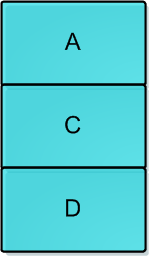

本人免费整理了Java高级资料，涵盖了Java、Redis、MongoDB、MySQL、Zookeeper、Spring Cloud、Dubbo高并发分布式等教程，一共30G，需要自己领取。
传送门：https://mp.weixin.qq.com/s/JzddfH-7yNudmkjT0IRL8Q
独占锁：是一种悲观锁，synchronized就是一种独占锁，会导致其它所有需要锁的线程挂起，等待持有锁的线程释放锁。
乐观锁：每次不加锁，假设没有冲突去完成某项操作，如果因为冲突失败就重试，直到成功为止。
一、CAS 操作
乐观锁用到的机制就是CAS，Compare and Swap。
CAS有3个操作数，内存值V，旧的预期值A，要修改的新值B。当且仅当预期值A和内存值V相同时，将内存值V修改为B，否则什么都不做。
1、非阻塞算法 （nonblocking algorithms）
一个线程的失败或者挂起不应该影响其他线程的失败或挂起的算法。
现代的CPU提供了特殊的指令，可以自动更新共享数据，而且能够检测到其他线程的干扰，而 compareAndSet() 就用这些代替了锁定。
2、AtomicInteger示例
拿出AtomicInteger来研究在没有锁的情况下是如何做到数据正确性的。
private volatile int value;
在没有锁的机制下需要借助volatile原语，保证线程间的数据是可见的（共享的）。
这样才获取变量的值的时候才能直接读取。
public final int get() {
return value;
}
然后来看看 ++i 是怎么做到的。
public final int incrementAndGet() {
for (;;) {
int current = get();
int next = current + 1;
if (compareAndSet(current, next))
return next;
}
}
在这里采用了CAS操作，每次从内存中读取数据然后将此数据和+1后的结果进行CAS操作，如果成功就返回结果，否则重试直到成功为止。
而compareAndSet利用JNI来完成CPU指令的操作。
public final boolean compareAndSet(int expect, int update) {
return unsafe.compareAndSwapInt(this, valueOffset, expect, update);
}
整体的过程就是这样子的，利用CPU的CAS指令，同时借助JNI来完成Java的非阻塞算法。其它原子操作都是利用类似的特性完成的。
而整个J.U.C都是建立在CAS之上的，因此对于synchronized阻塞算法，J.U.C在性能上有了很大的提升。参考资料的文章中介绍了如果利用CAS构建非阻塞计数器、队列等数据结构。
二、ABA问题
CAS看起来很爽，但是会导致“ABA问题”。
CAS算法实现一个重要前提需要取出内存中某时刻的数据，而在下时刻比较并替换，那么在这个时间差类会导致数据的变化。
比如说一个线程one从内存位置V中取出A，这时候另一个线程two也从内存中取出A，并且two进行了一些操作变成了B，然后two又将V位置的数据变成A，这时候线程one进行CAS操作发现内存中仍然是A，然后one操作成功。尽管线程one的CAS操作成功，但是不代表这个过程就是没有问题的。
如果链表的头在变化了两次后恢复了原值，但是不代表链表就没有变化。因此前面提到的原子操作AtomicStampedReference/AtomicMarkableReference就很有用了。这允许一对变化的元素进行原子操作。
在运用CAS做Lock-Free操作中有一个经典的ABA问题：
线程1准备用CAS将变量的值由A替换为B，在此之前，线程2将变量的值由A替换为C，又由C替换为A，然后线程1执行CAS时发现变量的值仍然为A，所以CAS成功。但实际上这时的现场已经和最初不同了，尽管CAS成功，但可能存在潜藏的问题，例如下面的例子：
现有一个用单向链表实现的堆栈，栈顶为A，这时线程T1已经知道A.next为B，然后希望用CAS将栈顶替换为B：
head.compareAndSet(A,B);
在T1执行上面这条指令之前，线程T2介入，将A、B出栈，再pushD、C、A，此时堆栈结构如下图，而对象B此时处于游离状态：

此时轮到线程T1执行CAS操作，检测发现栈顶仍为A，所以CAS成功，栈顶变为B，但实际上B.next为null，所以此时的情况变为：
其中堆栈中只有B一个元素，C和D组成的链表不再存在于堆栈中，平白无故就把C、D丢掉了。
以上就是由于ABA问题带来的隐患，各种乐观锁的实现中通常都会用版本戳version来对记录或对象标记，避免并发操作带来的问题，在Java中，AtomicStampedReference<E>也实现了这个作用，它通过包装[E,Integer]的元组来对对象标记版本戳stamp，从而避免ABA问题，例如下面的代码分别用AtomicInteger和AtomicStampedReference来对初始值为100的原子整型变量进行更新，AtomicInteger会成功执行CAS操作，而加上版本戳的AtomicStampedReference对于ABA问题会执行CAS失败：
package concur.lock;
import java.util.concurrent.TimeUnit;
import java.util.concurrent.atomic.AtomicInteger;
import java.util.concurrent.atomic.AtomicStampedReference;
public class ABA {
private static AtomicInteger atomicInt = new AtomicInteger(100);
private static AtomicStampedReference<Integer> atomicStampedRef =
new AtomicStampedReference<Integer>(100, 0);
public static void main(String[] args) throws InterruptedException {
Thread intT1 = new Thread(new Runnable() {
@Override
public void run() {
atomicInt.compareAndSet(100, 101);
atomicInt.compareAndSet(101, 100);
}
});
Thread intT2 = new Thread(new Runnable() {
@Override
public void run() {
try {
TimeUnit.SECONDS.sleep(1);
} catch (InterruptedException e) {
e.printStackTrace();
}
boolean c3 = atomicInt.compareAndSet(100, 101);
System.out.println(c3); //true
}
});
intT1.start();
intT2.start();
intT1.join();
intT2.join();
Thread refT1 = new Thread(new Runnable() {
@Override
public void run() {
try {
TimeUnit.SECONDS.sleep(1);
} catch (InterruptedException e) {
e.printStackTrace();
}
atomicStampedRef.compareAndSet(100, 101,
atomicStampedRef.getStamp(), atomicStampedRef.getStamp()+1);
atomicStampedRef.compareAndSet(101, 100,
atomicStampedRef.getStamp(), atomicStampedRef.getStamp()+1);
}
});
Thread refT2 = new Thread(new Runnable() {
@Override
public void run() {
int stamp = atomicStampedRef.getStamp();
System.out.println("before sleep : stamp = " + stamp); // stamp = 0
try {
TimeUnit.SECONDS.sleep(2);
} catch (InterruptedException e) {
e.printStackTrace();
}
System.out.println("after sleep : stamp = " + atomicStampedRef.getStamp());//stamp = 1
boolean c3 = atomicStampedRef.compareAndSet(100, 101, stamp, stamp+1);
System.out.println(c3); //false
}
});
refT1.start();
refT2.start();
}
}